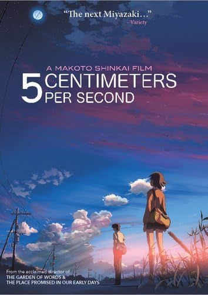
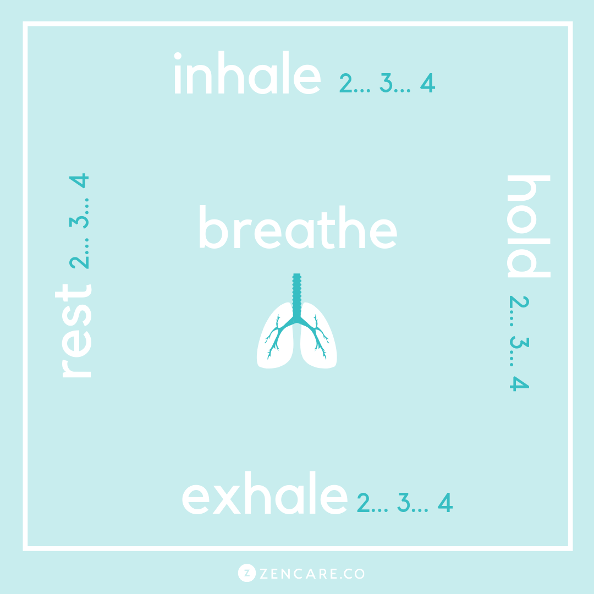
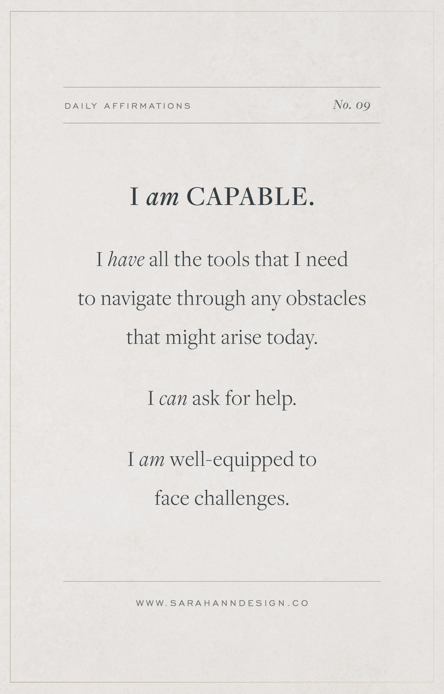
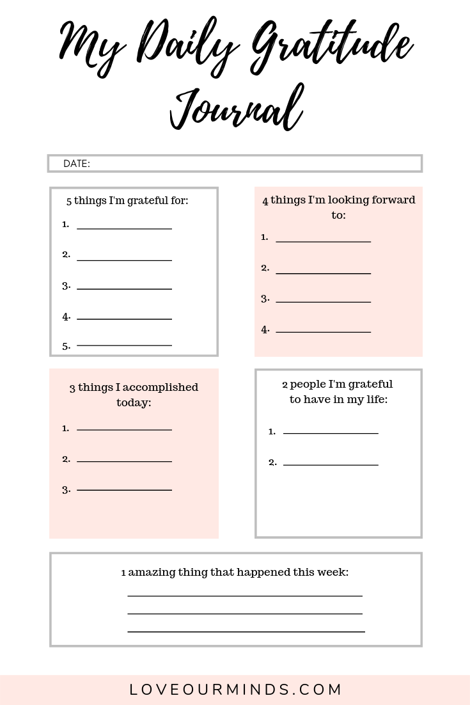
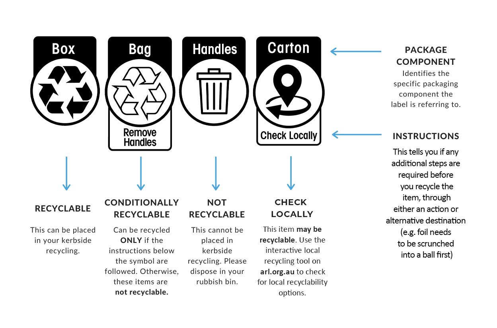
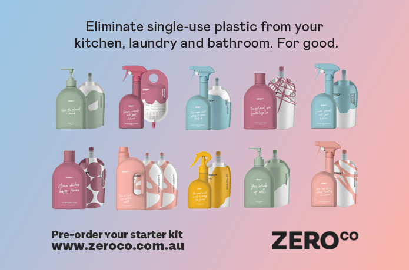
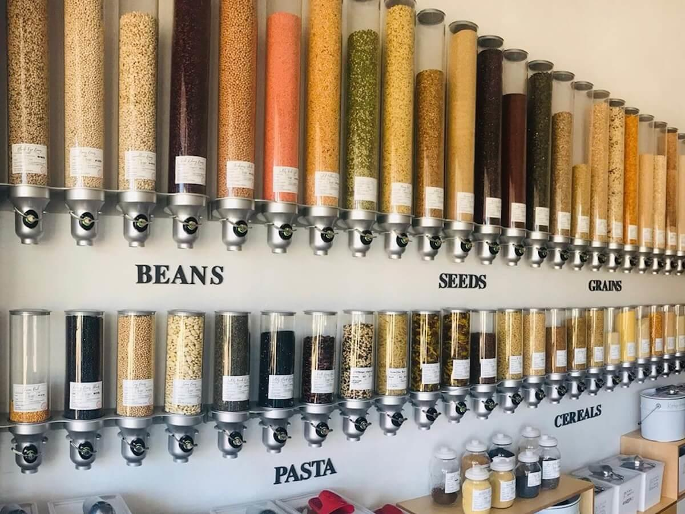

With the spread of coronavirus around the world, the Australian Government has implemented a new restriction on businesses in the hospitality industry, of strictly take-away and no dine-in. This means many businesses, who make a majority of their income from walk-ins and bookings, have had to close their doors from their primary source of income for the greater good of slowing the virus’ spread.
This has left businesses relying on services such as UberEats and locals or regulars to keep their businesses afloat. In order to play our part in supporting local businesses, we have compiled together a list of our favourite local business who need our support.Continue reading “Supporting Local Businesses”
With the world in a state of emergency due to the coronavirus pandemic, journalists across the world have been releasing stories to keep everyone updated on the crisis. While it is important to follow the stories and keep up to date on the medical advice and number of cases, I can’t help but feel really overwhelmed, stressed and worried about it all. The stories we are hearing aren’t always good and it’s beginning to play on my mind.
After waking up this morning, I went to Twitter to catch up on the latest news and found a thread, liked by someone I follow, created by Hazel Hayes (@TheHazelHayes) which really inspired me to write this article; I realised that I’m probably not the only one feeling worried and overwhelmed by it all. She shared some resources that really helped me and so I wanted to share them, as well as some other resources I have gathered through my own research and through friends, to help anyone feeling the same way.
Hi everyone, I hope you had a chance to watch something on last week’s recommended list! If last week’s genre wasn’t your cup of tea, fret not, I have something completely different in store for you this week. Although anime technically refers to all animation, anime is still largely regarded as mainly japanese animated films and series. When I think of anime, I think of long-running series such as Naruto or One Piece which can be hard to get into. This series of recommendations are easy to enjoy, bite sized shows that act as a great stepping stone for anyone who might be interested in anime.
Spirited Away
It would be a crime to not start a list of anime recommendations with one of Hayao Miyazaki’s works. Spirited Away is arguably one of the most iconic anime movies and it has seen much success worldwide. It’s set in a wonderous other dimension and filled with mystery and magic. The film follows a young girl as she finds herself in a strange, unfamiliar world and finds a way to escape and save the people important to her. I highly recommend Spirited Away for anyone who wants to escape reality for a bit. Spirited Away is also great for lifting your spirits as I think the essence of the film is one of hope.
Howl’s Moving Castle
Another masterpiece by Hayao Miyazaki is Howl’s Moving Castle. The movie follows the adventure of Howl, a wizard who lives in a moving castle. The adventure begins when a young girl, Sophie is cursed by an evil witch and is transformed into an old woman . Sophie turns to Howl for help to undo the curse and together, they embark on a mystical journey! I highly recommend Howl’s Moving Castle, the movie is just so well-written and the graphics are gorgeous!
Your Name
In this 2016 animation, 2 teenagers discover that they have a magical connection unlike any other – they are swapping bodies. They come to this realisation as both wake up in unfamiliar places and have missing memories from their own lives. They begin communicating with each other by leaving one another notes. Although this movie starts out confusing, the climax when the 2 main characters try to meet one another is absolutely mid-blowing!

5 Centimetres Per Second
The film begins with an image of cherry blossoms falling at 5cm per second and is a metaphor of fleeting young romance and bittersweet loss – the main themes of the movie. It follows the development of relationships throughout different time periods of the protagonist’s life. This isn’t your typical romance film with a happy ending. If anything, it’s a mirror of reality; a reflection of experiences we can all relate to!
To The Forest of Firefly Lights
This follows the unlikely friendship of a young human girl and a forest spirit that will disappear if touched by a human. As the years go by their bond grows and ultimately develops into a romance. The lack of bells and whistles makes the film an extremely easy watch. This is bound to take you on an emotional journey, just make sure you have some tissues by your side for the heart-breaking ending.
Violet Evergarden
Violet Evergarden is a story that highlights the tenacity of mankind. We follow the life of a young woman, Violet Evergarden who knows nothing besides war and violence from her time serving in the Leidenschaftlich army where we was treated as a war machine. Violet is unable to process or even understand emotions and the series sees her reconnecting with her feelings as she gains employment as a ghost-writer in an attempt to understand the meaning of the words “I love you”. This is such a compelling watch as the emotional storyline is so well-balanced with pockets of humour throughout the series.
The Disastrous Life of Saiki k.
The series follows the life of Saiki K., a high school student with amazing psychic abilities. Chaos ensues when all Saiki wants is to blend in and live life as an average teenager but gets pulled into adventures by people in his life. While being a light-hearted, easy watch, the show still manages to have you anticipating the next episode with it’s unique plot and eccentric characters.
Aggretsuko
Aggretsuko is a show I’m sure many of us can relate to. It follows the life of Retsuko, an average office worker who tries her best to adapt to the corporate world. In a largely hierarchical environment, she struggles to assert herself and is often taken advantage of by other co-workers and is often undermined. She takes out her frustrations in a healthy, but unique manner – singing death metal at karaoke. Aggretsuko is a timely reminder for us to be our own advocates and to find healthy coping mechanisms for the stresses we face on a daily basis.
The Seven Deadly Sins
When a kingdom is overrun by tyrants, a deposed princess resorts to urban legend for help. She begins a quest to locate a group of warriors who were wrongly accused of a crime for help. As the group as disbanded an have been vindicated, finding them and convincing them proves to be a challenge. Fans of myths, lore and fight scenes – this one’s for you!
With the list covering a wide range of genres, I hope you found something to add to your watch list! Let me know what you think of the above shows and if there’s anything you think I missed!
Hi everyone! With how challenging the past 2 years have been (and continue to be), I think it’s important to be kinder to ourselves. The first step is to not set unrealistic expectations for ourselves, which is why this year I’m taking it easy on the new year resolutions. I’m simply going to let myself do what I think my mind and body need, which is often a good TV show. However, with so many options across multiple streaming websites, I often experience choice paralysis and waste a good chunk of time scrolling endlessly, struggling to decide. This series will hopefully solve that problem for you – as I share some of my favourite TV shows and help narrow down your selections!
What better way to start this series off than with the post-apocalyptic/dystopian genre? It might feel like we’re already living in a zombie movie with infections and isolation being the norm, but the following suggestions show that it could be a lot worse. If you’re in the mood for something dark, gory and maybe even slightly confronting, the following are definitely worth a watch.
Squid Game
Squid game doesn’t necessarily fall into the “dystopian” genre, but it is definitely very dark. The TV drama took the world by storm in 2021,with many elements of the show going viral. The premise of the show is straight-forward enough: individuals in debt are given the opportunity to earn a large cash prize in a series of games where their lives are at risk. But the show plays out in a way unlike any other I’ve seen in this genre. If you’ve been holding off on watching it because you weren’t sure it was worth the hype, I’d definitely recommend giving it go.
Alice In Borderland
If you liked Squid Game, you’ll probably enjoy Alice In Borderland. Based off a Manga series, Alice In Borderland is also a game-based survival show. Although there are many common themes, Alice In Borderland features a more intricate, complicated plot that leaves viewers constantly on the edge of their seat.
Sweet Home
Released in 2020, Sweet Home is a Korean apocalyptic horror TV series. With many twists and turns, the plot is very well-thought out and delivered extremely well. If you’re a fan of classic zombie movies and like a bit of blood and gore, this is something that you’ll definitely enjoy.
Blood Red Sky
Speaking of classic zombie movies, Blood Red Sky is definitely one to put on your list (even though it isn’t actually a zombie movie). Blood red sky doesn’t pretend to be something that it isn’t – it doesn’t have much depth but that’s the charm of it! Some days you just want an easy watch and this is just that. It does have some emotional scenes and an actual storyline, so I’d say it’s a great starting point if you’re a beginner to the genre!
#ALIVE
#ALIVE is Korean zombie thriller movie that was released in the height of the pandemic when we were all in quarantine. The protagonists in the movie try to survive a virus by quarantining in their high-rise apartments. The movie is such a suspenseful thriller, made even better by the eerie similarities we face in reality.
Sweet Tooth
I couldn’t write a list about post-apocalyptic shows and not include Sweet Tooth. Released in 2021, Sweet Tooth has many topics that we’re familiar with in our daily life – from GMOs to climate change. Although slow at some parts, the characters are charming enough to keep you engaged till the end. I highly recommend for the next family movie night.
The Silent Sea
Featuring actors from Train to Busan, Squid Game and Sense 8, the star-studded cast of silent sea promises something brilliant. The premise is simple enough: a planet facing a water crisis sends experts to the moon to retrieve classified samples. The well-written plot, amazing CGI and exceptional acting make up for the slightly cheesy spacewalk and space acting.
The Platform
The Platform isn’t technically a post-apocalyptic show but I think it deserves an honourable mention. The platform is a social science fiction-horror movie filled with suspense, gore and drama. If you enjoyed shows such as Black Mirror and Parasite, this is definitely one to add to your list.
This list is definitely not comprehensive and I tried not to include any cult classics, but hopefully this has given you something to add to your watchlist for your next movie night. Let me know what your favourite zombie/thriller shows are and if I missed something!
With exams and submissions all over, it’s important to give yourself credit for your accomplishments, a pat on the back is well-deserved for finishing yet another stressful semester! The long nights spent hunched over your laptops have no doubt left you with a bad back and uncomfortable neck. In the last instalment of the mindfulness series, I look at how to get rid of residual stress!
When talking about wellbeing, it is impossible to ignore the role of physical health. Many studies have shown that physical health greatly influences our mental health – this comes down to the chemicals released in our brain during exercise.
Despite being aware of the benefits of physical exercise for my mental health, exercising is often the last thing on my mind – especially not when I’m in a post-exam holiday mode! I’ve found physical activities, such as yoga, with an element of mindfulness and meditation tied in to be a nice middle ground. However, with so many types of yoga from Hatha to Yin to Vinyasa – knowing where to start can be a challenge.
If you’re looking to begin your yoga journey, why not try a modern variation of yoga – aerial yoga? Aerial yoga originated in New York – it uses a hammock/yoga swing to allow for greater mobility as it allows students to perform postures that might not be possible on a yoga mat!
Aerial Yoga Perth owner, Sharon is passionate about spreading the love and awareness of aerial yoga. Aerial yoga is thought to be particularly beneficial for students who spend a long time sitting, perfect for University students like us. Concerned about my flexibility (or lack thereof), I asked about pre-requisites when starting and Sharon assured me that aerial yoga can be performed by people with all levels of fitness!
Aerial yoga is a great way to treat your body and mind as it not only has physical benefits such as increasing flexibility and strengthening muscles but also has mental benefits such as improving focus and increases the release of endorphins and serotonin.
Push away your doubts, challenge yourself and give aerial yoga a go – you’ll be pleasantly surprised at what your body can do!
It’s been a pleasure beginning this mindfulness journey together with you! I hope this mini series has been helpful and that there were some tips you found helpful and easy to incorporate into your everyday life. Stay safe, happy & healthy!
As Communications students, disconnecting from the world and focusing on ourselves can be extra challenging as we’re encouraged to constantly stay connected and up to date with the happenings of the world. With so much going on in our daily lives, we rarely take the time to check in with ourselves. We might not even know how to connect with ourselves. This article will talk you through little activities you can easily incorporate into your daily life that will help you prioritize your wellbeing
Meditation
Numerous studies have shown that meditation has many health benefits including reducing anxiety, lowering blood pressure, and improving sleep. However, the many types of meditation: spiritual meditation, mantra meditation and focused meditation etc., can be overwhelming for beginners who don’t know where to start. A main feature of meditation is making a conscious effort to be present by focusing your attention and eliminating the stream of jumbled thoughts that may be crowding your mind. The following are great resources to get you started on your meditation journey.
Headspace Mini Meditation
Headspace is a great starting point for those wanting to delve into the world of meditation. The short guided meditations are extremely helpful for beginners!
Goodful 10 minute guided meditation
Once you’ve gotten into the habit of daily meditation, challenge yourself by slowly extending your meditation sessions. With so many apps and podcasts available, don’t be afraid to try new meditation styles to find what works best for you!
2. Breathing Exercises
Similar to meditation, breathing exercises have many health benefits including reducing stress and improving blood pressure. Breathing exercises can be done anywhere, on your commute or even while you’re seated at your desk at uni. Breathing exercises force you to be present and aware of your own body by focusing on your breathing patterns. Similar to meditation, there are many types of breathing exercises and it’s important to find one that works for you. Square breathing is a great beginner-friendly breathing exercise you should try!

3. Daily Affirmations
A recent review found that up to 82% of people experience imposter syndrome. As young adults in a university setting, many of us have undoubtedly experienced feelings of self-doubt and inadequacy. However, it is often these negative thoughts that set us up for failure as we already have a mindset of failure. Affirmations are positive statements that can help challenge self-sabotaging thoughts and re-frame our perspective to a positive one that lends us confidence in our daily life. Hearing daily affirmations convince ourselves that we are capable, and that our negative thoughts are in fact, false and self-sabotaging. Below is a list of affirmations you can include in your daily routine – repeating these affirmations to yourself while you’re getting ready or before you start you start your day!

4. Gratitude Journal
As busy university students, we often get caught up in our busy daily schedules and get overwhelmed with out never-ending tasks. We all know the importance of self-reflection but can never find the time to actually slow down. A gratitude journal is a simple way for us to reflect on the day and incorporate appreciation for life in our daily routines. A journal entry doesn’t have to be 1500 words long, it can be as simple as listing 3 things you were grateful for during the day. It forces you to be present and reflect on the good every day. Your daily gratitude journal could look something like this –

I hope you try some of these methods out! Let us know how you like to keep yourself grounded and if there are any other methods we should incorporate into our daily routine!
With so much attention being given to personal well-being, we tend to forget that well-being is more than just about the self. Well-being is also about being conscious of our actions, how we treat others and our environment.
All the literature has shown that climate change is real and that it’s essential to take action now to minimise further damage to the earth. Adding ‘saving the earth’ to the list of things to do is a huge mission. Some of us are just starting our adulthood journey and are still shrinking clothes in the dryer, how are we meant to fix an issue caused by major international corporations? This article will talk you through little changes you can make to your daily life to reduce your carbon footprint. ‘Saving the earth’ doesn’t have to cost much and isn’t this huge daunting task. It can be quick, simple and easy!
We all know recycling is the easiest way to contribute to the environment. Even better, its free! However, trying to understand recycling labels has always been a source of confusion. New labels make things easier – explicitly telling you where to put different components of products.
Companies have even taken it one step further with the option to return some products to the store. For instance, instead of throwing out wrappers, keep it in a bag and return it to your local grocery store on your next grocery run. It’s doesn’t add much time to your weekly routine and you’re giving back! How great!

Reusing
Re-purposing jars and boxes is another great, cost-effective way of being conscious of your impact on the environment! Like many millennials, I have a slight plant obsession that has been further fuelled by the pandemic. I love buying plants but pots are incredibly pricy for some reason. A great way to get around this is by re-purposing used candle jars and using them as pots for your little planters!
Another way to be conscious about our impact on the environment is by considering sustainable alternatives for products we use everyday but don’t give a second thought to, much less have conversations about! As a University student, I was always under the impression that making the switch to sustainable options would be more costly but the Aussie owned companies I’ve listed below show that’s not always the case!
Toilet Paper
Toilet paper was always something I just took for granted. It was only when I actually thought about how trees were literally being chopped down for me to clean my bum did I realise how wasteful non-recycled toilet paper actually is. If you’re not comfortable with the idea of a bidet, switching to recycled toilet paper or even bamboo toilet paper is a great alternative! I’ve linked 2 local companies here for you to check out.
As far as cleaning products go, I always just pick the ones that are on sale or the ones that I know smell good. I just want something that’s easy to use and gets the job done. Over the years, I’m sure I’ve accumulated a fair share of plastic bottles that have ended up in a landfill somewhere. But that’s not the case any more. I’ve switched to an Aussie owned brand called Zeroco. All their cleaning products come in sachets that get sent back to the company to be refilled when empty and can be stored in their plastic bottles made from recycled materials.

No-waste shops
If you’re not ready to commit, a great way to get started is low waste stores! Simply bring in your empty containers and get them refilled in store with products of your choice! These shops carry more than cleaning products, find everything you need from flour to spices to beans! You simply scoop up how much you need so you don’t end up forgetting about the ingredients and save on throwing it out when you remember it exists 6 months later!

Here are 3 no-waste shops in the area that you should definitely pop by to start your journey to reduce single use plastics.
Many studies and even documentaries have showed that fast fashion continues to be a huge cause of concern. However, as University students, fast fashion seems to be the only viable option for us as our options are limited by budget constraints. However, when it comes to sustainably clothing ourselves, there are a few options.
Thrifting
95% of all textiles have the potential to be reused or recycled, but currently they are recycled at a rate of only 15%. Purchasing pre-loved clothes from place such as Salvos is a great way of revamping your closet without breaking the bank. Another great option is buying pre-loved clothes from Facebook Marketplace, where it’s easy to find boutiques selling fashionable and affordable second-hand clothing.
2. Recycled Materials
As companies grow more aware of reducing waste, many brands use Polyester fibers that have been made from the recycling of discarded single use bottles that were destined for landfill. When shopping online, keep your eye out for sustainable, eco-friendly alternatives!
I hope you try some of these methods out! Let us know of any other quick and easy tips and tricks you use in your daily life!